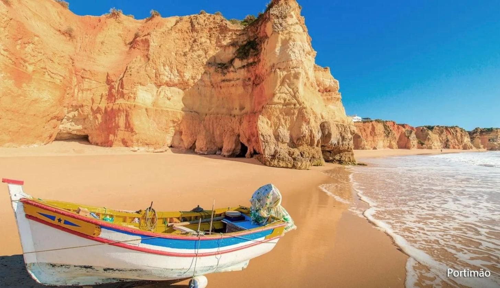
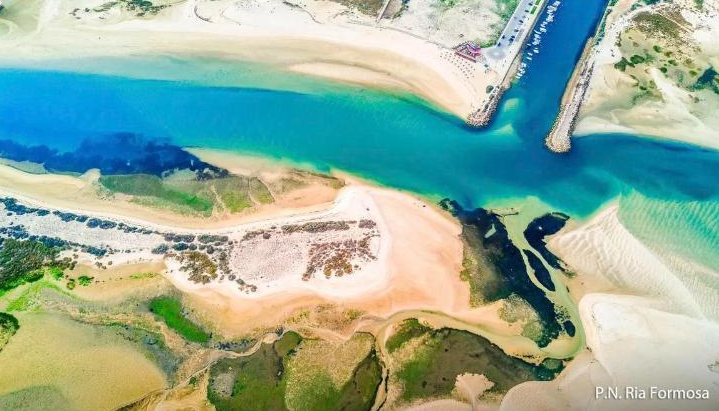
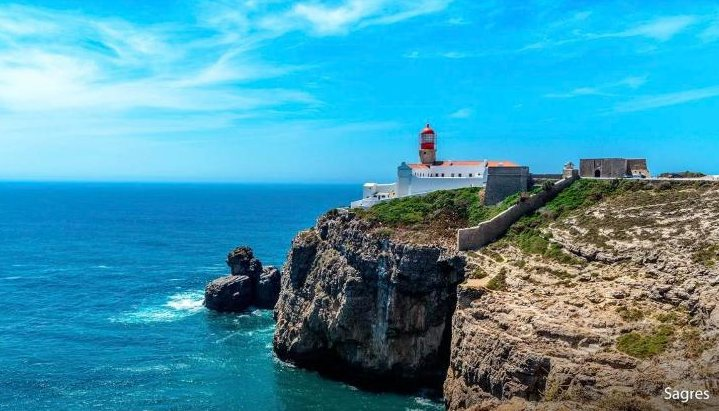
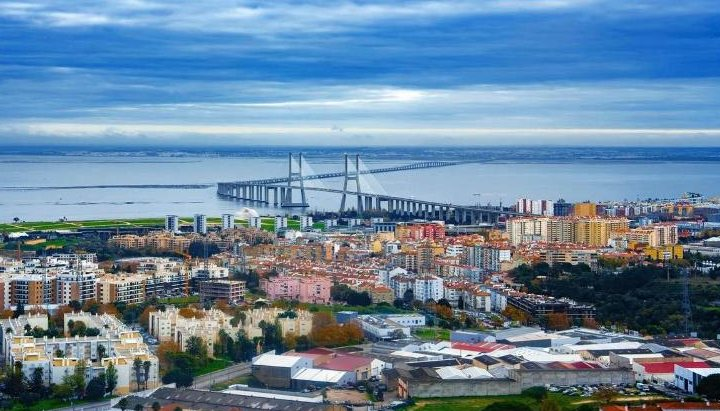
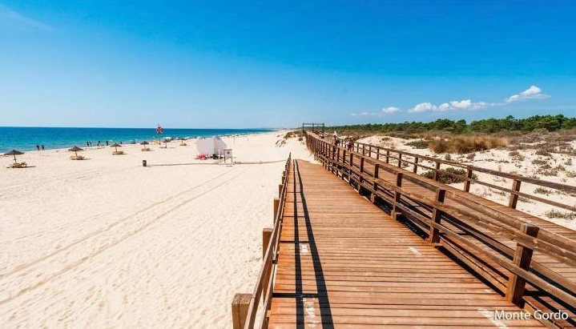

dzień1
Przylot do Portugalii
📍 Faro → Monte Gordo
Bezpośredni lot do Faro. Autokar zawozi grupę do hotelu w Monte Gordo — nadmorskiej miejscowości przy granicy z Hiszpanią. Zakwaterowanie, kolacja i nocleg.

Południe Portugalii i Hiszpanii — jeden hotel przez cały tydzień
Dotknij mapy, żeby ją powiększyć.
Kolejność zwiedzania może się nieco zmienić — o szczegółach decyduje pilot na miejscu.
📍 Faro → Monte Gordo
Bezpośredni lot do Faro. Autokar zawozi grupę do hotelu w Monte Gordo — nadmorskiej miejscowości przy granicy z Hiszpanią. Zakwaterowanie, kolacja i nocleg.

📍 Park Narodowy Ria Formosa (okolice Faro)
Spokojny rejs łodzią między małymi wysepkami ogromnej, chronionej laguny. Mieszka tu mnóstwo ptaków, często widać flamingi. Po południu powrót do hotelu i czas wolny.
🚌 ok. 130 km w ciągu dnia

📍 Monte Gordo lub Sewilla (Hiszpania)
Odpoczynek w hotelu i na plaży.

📍 Przylądek św. Wincentego · Sagres · Lagos · Portimão
Przylądek św. Wincentego to najdalej na południowy zachód wysunięty skrawek Europy, z latarnią na wysokim klifie. W Sagres punkt widokowy i twierdza, gdzie Henryk Żeglarz założył słynną szkołę żeglarzy. Potem Lagos — spacer przy starych murach i czas na plaży — i na koniec spacer po plaży Praia da Rocha w Portimão.
🚌 ok. 350 km w ciągu dnia
📍 Kadyks (Hiszpania)
Miasto prawie ze wszystkich stron otoczone wodą, ma ponad 3000 lat. Stary port, promenada nad zatoką z dawnymi fortyfikacjami, park Genovés, wąskie uliczki starówki i Nowa Katedra. W czasie wolnym można wejść na wieżę widokową Tavira (173 schody).
🚌 ok. 540 km w ciągu dnia — długi dzień w autokarze

📍 Monte Gordo lub Lizbona
Odpoczynek w hotelu i na plaży.
🚌 Lizbona jest daleko: ok. 645 km w obie strony

📍 Monte Gordo
Cały dzień wolny — plaża, spacer nad oceanem, odpoczynek przed powrotem.
📍 Faro → Katowice
Śniadanie, wymeldowanie, czas wolny (zależnie od godziny lotu) i przejazd na lotnisko w Faro. Lot do Polski.
Wylot z Katowic. Cena jest za jedną osobę, gdy w pokoju są 2 osoby. Do ceny biuro dolicza jeszcze 30 zł opłat na fundusze gwarancyjne.
| Cena wycieczki (najtańszy termin) | 5 799 zł |
| Fundusze gwarancyjne (TFG i TFP) | 30 zł |
| Opłata u pilota: bilety, przewodnicy, audioprzewodnik | 145 € ≈ 616 zł |
| Opłata klimatyczna | 7 € ≈ 30 zł |
| Napiwki | 10 € ≈ 42 zł |
Euro przeliczone orientacyjnie po ok. 4,25 zł. Bez wycieczek dla chętnych do Sewilli (ok. 192 €) i Lizbony (ok. 167 €). Dla 2 osób: ok. 13 000 zł.